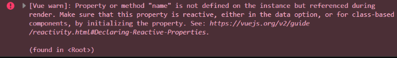
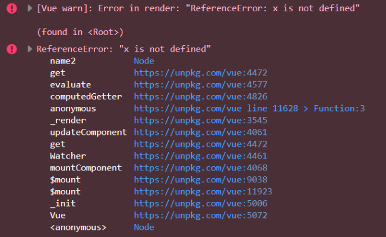
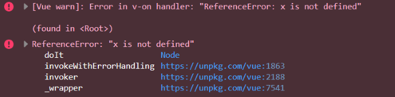
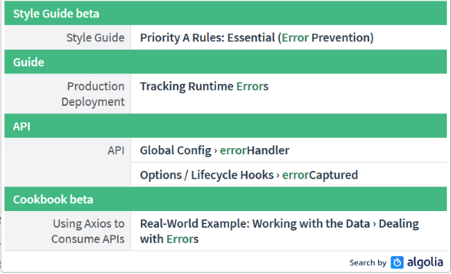

原文连接:https://www.cnblogs.com/fundebug/p/handling-errors-in-vuejs.html
- 原文: Handling Errors in Vue.js
- 译者: Fundebug
本文采用意译，版权归原作者所有
去年一整年，我都在使用最爱的—Vue.js— 来做项目。最近突然意识到，我竟然从来没有认真去处理异常。我可以自恋地说："我写的代码是完美的，没有BUG。" 我相信大家都明白这是迷之自信。最近，我花了不少时间研究了Vue中处理异常的各种技巧，在此想把我学到的分享给大家。
错误大全
为了测试各种异常处理技巧，我故意触发三种类型的错误。
- 第一种：引用一个不能存在的变量：
<div id="app" v-cloak>
Hello, {{name}}
</div>上述代码运行后不会抛出错误，但是在控制台会有[Vue warn]消息。

你可以在Codepen查看例子完整代码。
- 第二种：将变量绑定到一个被计算出来的属性，计算的时候会抛出异常。
<div id="app" v-cloak>
Hello, {{name2}}
</div>
<script>
const app = new Vue({
el:'#app',
computed:{
name2() {
return x;
}
}
})
</script>运行上述代码会在控制台抛出一个[Vue warn]和一个常规的错误，网页白屏。

你可以在Codepen查看例子完整代码。
- 第三种：执行一个会抛出异常的方法
<div id="app" v-cloak>
<button @click="doIt">Do It</button>
</div>
<script>
const app = new Vue({
el:'#app',
methods:{
doIt() {
return x;
}
}
})
</script>这个错误在控制台也[Vue warn]和常规报错。和上一个错误的区别在于，只有你点击了按钮才会触发函数调用，才会报错。

你可以在Codepen查看例子完整代码。
在继续之前，我想声明上面3个例子并不代表所有类型的错误。这3种是比较常见的错误。
好了，我们该怎么处理异常呢？我很惊讶在Vue的文档中竟然没有介绍异常处理的章节。

是的，文档中是有一个，但是介绍极其简短。
如果在组件渲染时出现运行错误，错误将会被传递至全局
Vue.config.errorHandler配置函数 (如果已设置)。利用这个钩子函数来配合错误跟踪服务是个不错的主意。比如 Sentry，它为 Vue 提供了官方集成。
P.S. 国产BUG监控服务Fundebug也为Vue提供了官方集成。
我个人建议官方应该有详细的介绍。总的来说，Vue中异常处理包含以下几个方面的技巧：
- errorHandler
- warnHandler
- renderError
- errorCaptured
- window.onerror (不仅仅针对Vue)
技巧1：errorHandler
我们要学习的第一个技巧是errorHandler。你也许知道，这是Vue中最广泛使用的异常处理方式。
Vue.config.errorHandler = function(err, vm, info) {
}err指代error对象，info是一个Vue特有的字符串，vm指代Vue应用本身。记住在一个页面你可以有多个Vue应用。这个error handler作用到所有的应用。
Vue.config.errorHandler = function(err, vm, info) {
console.log(`Error: ${err.toString()}\nInfo: ${info}`);
}第一种错误不会触发errorHandler，它只是一个warning。
第二种错误会抛出错误被errorHandler捕获：
Error: ReferenceError: x is not defined
Info: render第三种错误也会被捕获：
Error: ReferenceError: x is not defined
Info: v-on handler记住info里面的信息也是非常有用的。
技巧2: warnHandler
warnHandler用来捕获Vue warning。记住在生产环境是不起作用的。
Vue.config.warnHandler = function(msg, vm, trace) {
}msg和vm都容易理解，trace代表了组件树。请看下面的例子：
Vue.config.warnHandler = function(msg, vm, trace) {
console.log(`Warn: ${msg}\nTrace: ${trace}`);
}第一个错误被warnHandler捕获：
Warn: Property or method 'name' is not defined on the instance but referenced during render. Make sure that this property is reactive, either in the data option, or for class-based components, by initializing the property. See: https://vuejs.org/v2/guide/reactivity.html#Declaring-Reactive-Properties.
Trace:
(found in <Root>)你可以查看三个例子的实际运行情况:
第一个: 例子1
第二个: 例子2
第三个: 例子3
技巧3: renderError
和前面两个不同，这个技巧不适用于全局，和组件相关。并且只适用于非生产环境。
下面是一个简单的例子：
const app = new Vue({
el:'#app',
renderError (h, err) {
return h('pre', { style: { color: 'red' }}, err.stack)
}
})第一个例子是没有效果的，因为只是一个warning。第二个例子就会在网页上显示具体的错误信息: 示例代码
老实说，我没觉得这个比直接看控制台好多少。但是，如果你们的QA团队或则测试对浏览器控制台不熟悉的话，这个还是蛮有用的。
技巧4: errorCaptured
errorCaptured是最后一个和Vue相关的技巧，这个技巧让我很迷惑，现在还是有点搞不明白。文档是这么介绍的：
当捕获一个来自子孙组件的错误时被调用。此钩子会收到三个参数：错误对象、发生错误的组件实例以及一个包含错误来源信息的字符串。此钩子可以返回
false以阻止该错误继续向上传播。
基于我的一些分析，这个error Handler只能在父组件中处理子组件的错误。据我所知，我们没法直接在Vue的主实例(main instance)中使用它。
为了测试，我构造了下面的例子：
Vue.component('cat', {
template:`
<div><h1>Cat: </h1>
<slot></slot>
</div>`,
props:{
name:{
required:true,
type:String
}
},
errorCaptured(err,vm,info) {
console.log(`cat EC: ${err.toString()}\ninfo: ${info}`);
return false;
}
});
Vue.component('kitten', {
template:'<div><h1>Kitten: {{ dontexist() }}</h1></div>',
props:{
name:{
required:true,
type:String
}
}
});注意 kitten 组件的代码是有BUG的。
<div id="app" v-cloak>
<cat name="my cat">
<kitten></kitten>
</cat>
</div>捕获的信息如下:
cat EC: TypeError: dontexist is not a function
info: render下面是运行实例。
errorCaptured是个很有趣的特性，我想哪些构建组件库的开发者应该会用到吧。这个特性更像是一个面向组件开发者而不是一般开发者。
终极技巧: window.onerror
最后也是最重要的一个候选项 window.onerror。它是一个全局的异常处理函数，可以抓取所有的JavaScript异常。
window.onerror = function(message, source, line, column, error) {
}我想函数的参数中只有source难以从字面上理解吧，它代表了当前的URL。
接下来事情就比较好玩了。如果你定义了onerror，但是没有启用Vue.config.errorHandler，那么有很多异常都抓不到。Vue希望你要定义它，否则异常不会抛出去的。这到底有没有意义？我不是很懂，我觉得没必要，甚至有点奇怪。
如果定义errorHandler的代码有BUG，那么运行起来也不会被onerror抓到。下面的例子中，如果将oopsIDidItAgain()解注释，你就会发现这个问题。只有第二个按钮没有和Vue绑定，所以报错无论如何都会被抓到。运行实例
总结
正如开篇提到，这是我第一次写关于这个主题的文章。我也希望从大家获得反馈，包括评论、建议以及修订意见。我希望大家可以分享自己如何使用的具体事例。
关于Fundebug
Fundebug专注于JavaScript、微信小程序、微信小游戏、支付宝小程序、React Native、Node.js和Java线上应用实时BUG监控。 自从2016年双十一正式上线，Fundebug累计处理了10亿+错误事件，付费客户有阳光保险、荔枝FM、掌门1对1、核桃编程、微脉等众多品牌企业。欢迎免费试用！

版权声明
转载时请注明作者Fundebug以及本文地址：
https://blog.fundebug.com/2019/06/17/handling-errors-in-vuejs